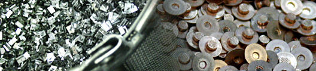
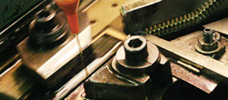

Bigelow Components Makes the Smart Decisions with Your Micro Components Bigelow Components is proud of the way we conduct our business, with the utmost pride and integrity. This is evident in our commitment to manufacturing precision metal parts with the safest and most environmentally friendly materials possible. Our mission is to deliver the highest performing parts while saving you the most money and time. Our commitment to excellence is exemplified by our pledge to use the safest vanishing oils, balance the benefits of solvents with environmental concerns, and perform the cold heading process down to every last detail including an often forgotten tumbling process. |
|
|
Featured Post: Tumbling Process Leads to Finished Part  Deburring is an integral procedure that will result in not only a functional metal part but an aesthetically pleasing metal part. Bigelow's production of small precision metal parts involves an intricate progression, concluded by deburring. Find out how Bigelow Components utilizes this intensive tumbling process to produce the smooth, deburred metal parts many companies desire. |
|
|
Balancing solvent performance with environmental concerns
Solvents eliminate oil residue amassed from the metal forming process and offer numerous benefits. However, some solvents can be harmful to the environment. We have a commitment to balancing solvent performance with environmental stewardship. |
Vanishing Oils are Integral Parts of Metal Stamping Process

Vanishing oils are conducive to the metal stamping process because they make micro components easier to clean. They leave minimal film and allow us to manufacture without excessive smoke and fume. |
| We only use the safest, most environmentally friendly materials to manufacture precision metal parts. Would you like to discuss how our full service finishing processes can produce the precision micro component your company needs? Give us a call at (973) 467-1200 or email b.harman@bigelowcomponents.com. | |
Bigelow Components Corp. • 74 Diamond Rd. • Springfield, NJ 07081 • Phone: 973-467-1200 • Fax: 973-467-9397 • Email: info@bigelowcomponents.com |
|